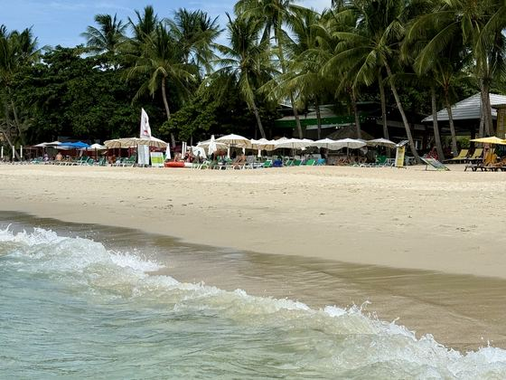
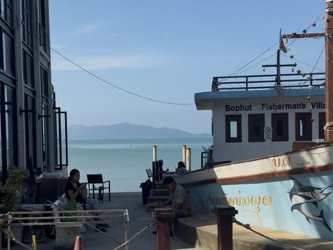
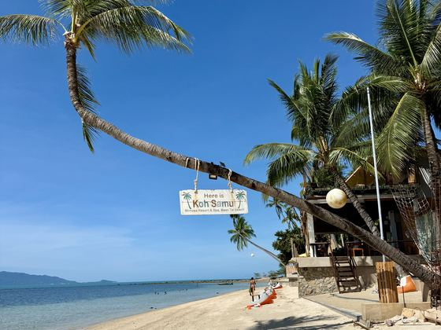

Where to Stay in Koh Samui
Picking the wrong side of the island is the most expensive mistake you can make here, and you make it before you arrive. Chaweng is busy and never really sleeps. Lamai is calm and much more family-friendly, with a proper local life running behind the beach. The west coast is where the sunsets are, and where almost no tourists stay. Sort out the area first — the hotel matters far less than most people think.
Which area actually suits you
Samui is a ring road with very different moods along it. Twenty minutes apart can feel like two different holidays.
Chaweng
The busiest strip on the island, and the one most first-timers book. Long sandy beach, every restaurant you could want, and a nightlife that carries on until it doesn't. Good if you want everything within walking distance and don't mind noise. Less good if you came here to hear the sea.
Lamai
Where I'd send most people, and where families tend to be happiest. Calmer than Chaweng, a proper beach, and a real town behind it — markets, a hospital, ordinary shops, people going about their week. You get the convenience without the constant volume. This is also where both live cameras point.

Bophut & Fisherman's Village
Older, prettier, more grown-up. Wooden shophouses, good restaurants, a Friday walking street. The beach is narrower and the sea is shallow and calm rather than swimmable-dramatic. Popular with couples and people who've been to Thailand before.

Maenam
Quiet, long, unhurried, and noticeably cheaper. A pocket of long-stay expats and people who came for two weeks and rearranged their lives. Not much happens, which is precisely the point.

The west coast — Taling Ngam, Lipa Noi, Nathon
Barely any tourists, and the best sunsets on the island by a distance. The trade-off is that you'll need a scooter or a car for everything, and the swimming is tidal. If you want the version of Samui that doesn't perform for anyone, it's here.
The hotels themselves
I've deliberately not turned this page into another ranked hotel list — there are enough of those, and most are written by people who've never stayed anywhere on them. Inside the free guide you'll find the places my friends or I have actually stayed in and liked, grouped by what kind of trip you're having: budget, family friendly, luxury, adults only, sunset view, boutique, eco-friendly, and the conceptual ones that are worth a night purely because there's nothing like them at home.
All of this in one PDF you can use offline.
Eight pages, 300+ places, no email needed. Save it to your phone before you fly — signal on the island is fine, but not everywhere.